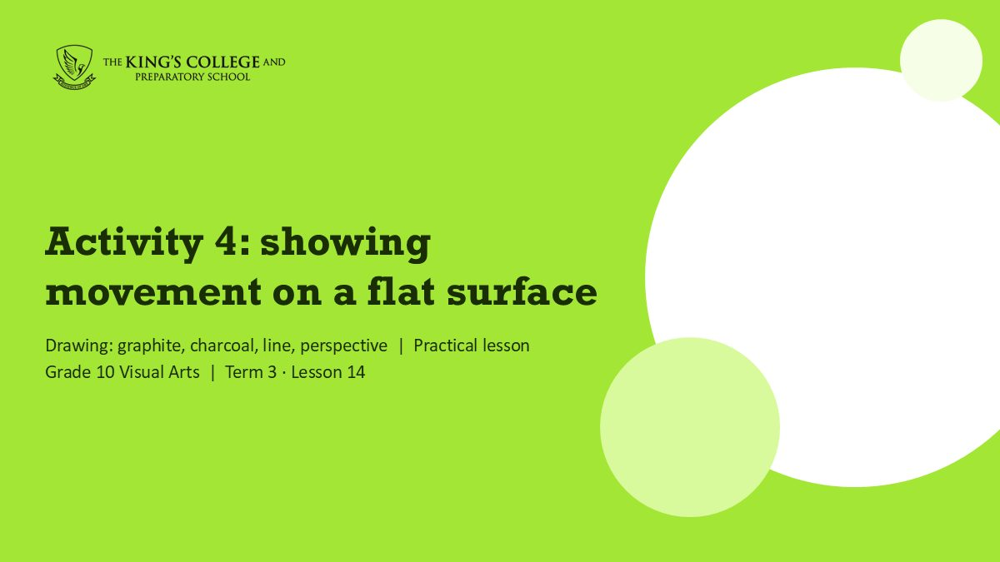

Term 3 · Lesson 14 · Practical lesson
Activity 4: showing movement on a flat surface
Start here
Today I will
- Know five strategies that suggest movement
- Try three strategies on my own action
- Choose the strategy that works best for my idea
In 1878 Eadweard Muybridge photographed a galloping horse in a row of frames. Why was that so surprising to painters at the time?
Words to Know
| Word | Meaning |
|---|---|
| Implied movement | Movement that is suggested in a still image. |
| Repetition | Showing the same figure several times in a sequence. |
| Blur | Soft, smeared or broken edges that suggest speed. |
| Diagonal | A slanting line or direction; diagonals feel more active than verticals and horizontals. |
| Cropping | Cutting part of the figure off at the edge so it seems to move beyond the frame. |
Slides

Notes
Strategies artists use to suggest movement: repetition and sequence (Muybridge), blurred and broken edges, diagonals, directional marks and cropping; Degas and Bernini as examples.
Five ways to make a still image move
- Repetition: Several overlapping or side-by-side positions of the figure (Muybridge's sequences).
- Blur and broken edges: Soft or smeared edges on the moving parts.
- Diagonals: A body or composition tilted on a slant feels unstable and active.
- Directional marks: Lines or strokes that follow the path of the movement.
- Cropping: Let part of the figure leave the frame, as Degas often did with dancers.
Making the studies
- Same action: Use the action from Activity 3 in all three studies.
- One strategy each: Change only the strategy, so you can compare.
- Small and quick: About the size of your hand, in pen or fineliner.
- Compare: Which study feels the most alive, and why?
A still image moves when the eye is made to move.
Practical
You need: Fineliners or ballpoint pens, VJ, your Activity 3 drawing
Activity 4: showing movement on a flat surface
- Choose three of the five strategies.
- Draw your action three times in pen, one strategy per study.
- Label each study with its strategy.
- Note one strategy used by Muybridge, Degas or Bernini that you could borrow.
- Star the study with the strongest sense of movement.
- Annotate why it works and how you might use it in the final artwork.
Activities 1, 2 and 3 hand-in (Friday 1 October).
Test yourself
- Name three strategies that suggest movement.
- Why do diagonals feel active?
- What did Muybridge's photographs show artists?
Show answers
1. Any three of repetition, blur, diagonals, directional marks and cropping. 2. They look unstable, as if about to fall or move. 3. How a body or animal really moves, one step at a time (for example all four hooves of a galloping horse off the ground together).
Finished early?
Movement in steps.
- Divide a VJ strip into six boxes.
- Draw a simple figure jumping, one stage per box.
- Change the pose a little each time.
- Compare with a Muybridge sequence.